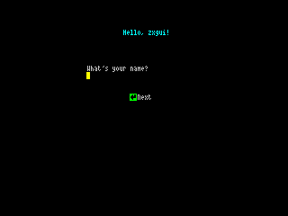

speccytools.org
speccytools.orgMain
emu: Spectranet emulator on a browser!
index: a list of TNFS resources
Running Spectranet
 |
Fuse Win, FuseX Mac Fuse emulator fork. Has gdbserver (to enable, select "GDBServer..."). |
 |
Es.pectrum (Win) Easy to use emulator. Supports spectranet, has asm debugger. |
 |
Spectranet Connect Your Spectrum to network, allows to debug your hardware. |
Development tools
 |
z88dk Development Kit for Z80 Computers. Comes with z88dk-gdb. |
|  |
zxgui A lightweight GUI framework for your ZX Spectrum program. It allows you to have simple scenes with buttons, labels, edits, images and selects. |
 |
z88dk-gdb A gdb-alike client to debug your program with Fuse or real hardware |
|
zx-proto A resource-lightweight protocol for ZX Spectrum on which the client and the server communicate over the TCP channel, exchanging efficient key-value like objects, without having to worry about buffers or/and protocol details. |
|
 |
spectranet-gdbserver "Stub" module for spectranet, allows you to debug real hardware |
Other resources
L